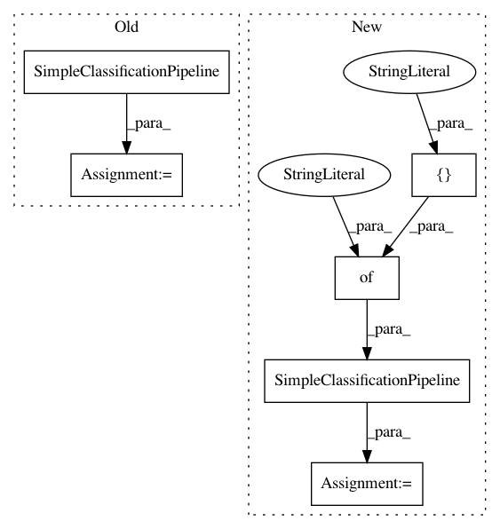

9154f55a1d0946c6ee5a1ac309db2843e7ff1567,test/test_pipeline/components/data_preprocessing/test_balancing.py,BalancingComponentTest,test_weighting_effect,#BalancingComponentTest#,64
Before Change
include={"classifier": [name]})
default = cs.get_default_configuration()
default._values["balancing:strategy"] = strategy
classifier = SimpleClassificationPipeline(default, random_state=1)
predictor = classifier.fit(X_train, Y_train)
predictions = predictor.predict(X_test)
self.assertAlmostEqual(acc,
sklearn.metrics.f1_score(predictions, Y_test),
After Change
include={"classifier": ["sgd"], "preprocessor": [name]})
default = cs.get_default_configuration()
default._values["balancing:strategy"] = strategy
classifier = SimpleClassificationPipeline(
default, random_state=1,
include={"classifier": ["sgd"], "preprocessor": [name]})
Xt, fit_params = classifier.pre_transform(X_train, Y_train)
classifier.fit_estimator(Xt, Y_train, **fit_params)
predictions = classifier.predict(X_test)
self.assertAlmostEqual(acc,
In pattern: SUPERPATTERN
Frequency: 5
Non-data size: 6
Instances
Project Name: automl/auto-sklearn
Commit Name: 9154f55a1d0946c6ee5a1ac309db2843e7ff1567
Time: 2016-07-22
Author: feurerm@informatik.uni-freiburg.de
File Name: test/test_pipeline/components/data_preprocessing/test_balancing.py
Class Name: BalancingComponentTest
Method Name: test_weighting_effect
Project Name: automl/auto-sklearn
Commit Name: c5d23187daa06f7d3c11941d169fc62d1db0acfc
Time: 2017-02-11
Author: feurerm@informatik.uni-freiburg.de
File Name: test/test_pipeline/test_classification.py
Class Name: SimpleClassificationPipelineTest
Method Name: test_predict_proba_batched
Project Name: automl/auto-sklearn
Commit Name: c5d23187daa06f7d3c11941d169fc62d1db0acfc
Time: 2017-02-11
Author: feurerm@informatik.uni-freiburg.de
File Name: test/test_pipeline/test_classification.py
Class Name: SimpleClassificationPipelineTest
Method Name: test_predict_batched
Project Name: automl/auto-sklearn
Commit Name: 68b022cb9d24eb4e9b8341887e8ff1c9f9fda405
Time: 2020-12-11
Author: 44504424+franchuterivera@users.noreply.github.com
File Name: test/test_pipeline/test_classification.py
Class Name: SimpleClassificationPipelineTest
Method Name: test_fit_instantiates_component
Project Name: automl/auto-sklearn
Commit Name: d33fc853a121bfd03e2ed03c2876b0bab4b57510
Time: 2017-02-11
Author: feurerm@informatik.uni-freiburg.de
File Name: test/test_pipeline/test_classification.py
Class Name: SimpleClassificationPipelineTest
Method Name: test_predict_proba_batched